Ounje l'ogun oro.
Food is the cure for many troubles
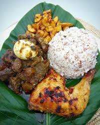 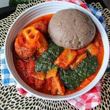 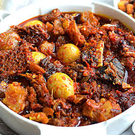 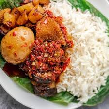 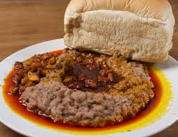
Try out some dish 🍜🥘🍛
Menu
Amala
— Made from yam or cassava flour, eaten with ewedu, gbegiri, and obe ata
Ofada Rice and Ayamase
— Local rice with spicy green sauce and meats
Moi Moi
— Steamed bean pudding with peppers and onions
Akara
— Deep-fried bean cakes eaten with pap or bread
EACH HAS A FIXED PRICE OF ₦5,556
DELIVERY CHARGES APPLY
 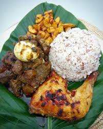
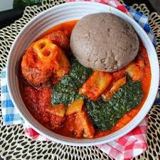
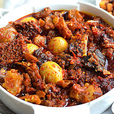
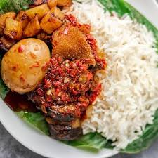
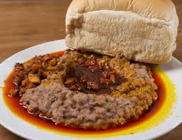
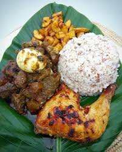
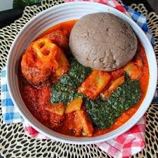
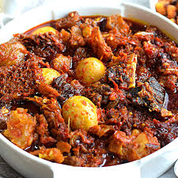
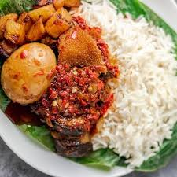
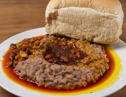